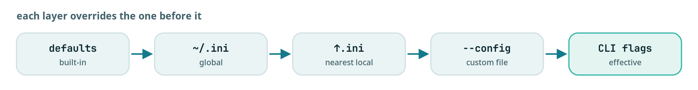

Architecture and internals
How all three layers work inside: the store on disk, concurrency, branch selection, versioning and staleness, and the two invariants.

How contextlake works inside: the three tiers and what each is allowed to depend on, how the mirror picks branches and authenticates, how the knowledge store is laid out and versioned, what is on disk and what deliberately is not, and the two invariants that keep it out of your repositories.
This is the implementation-depth companion to contextlake, explained, which covers the same machinery at reasoning depth. Where the two disagree, this page is the one that names files.
Three tiers, depending downward only#
| Tier | Package | Depends on |
|---|---|---|
| Mirror core | contextlake |
The Python standard library, plus argcomplete, plus the external git and glab binaries |
| Knowledge layer | contextlake.kb, the [kb] extra |
The mirror core, tree-sitter grammars, pydantic, the mcp SDK |
| Serving | kb/server.py, kb/dashboard/, kb graph |
The knowledge layer, read-only |
The mirror core declares exactly one pip dependency (pyproject.toml), which is the constraint that
keeps pip install contextlake viable on a locked-down machine. The knowledge layer is imported
lazily from the CLI, so the core runs with the extra absent and says so if you reach for a kb
verb without it. [kb] needs Python 3.10 or newer because the mcp SDK does; the core declares
requires-python = ">=3.10", one floor shared by both tiers.
Configuration#
Two config systems, one per tier, both merging the same way: built-in defaults, then a global file,
then the nearest ancestor directory's local file, then an explicit --config, then CLI flags.
| Tier | Global | Directory-scoped | Constant |
|---|---|---|---|
| Mirror | ~/.contextlake.ini |
.contextlake.ini |
CONFIG_FILE, LOCAL_CONFIG_FILE in src/contextlake/config.py |
| Knowledge | ~/.contextlake/kb.toml |
.contextlake.kb.toml |
GLOBAL_CONFIG, LOCAL_CONFIG in src/contextlake/kb/config.py |
Discovery walks up from the current directory to the filesystem root, the way git finds .git.

One carve-out matters for safety. Settings that would cause contextlake to run a program are
honoured only from a file you named explicitly or from your own home config, never from a file found
by the directory walk, because such a file can arrive inside a repository you cloned. The gate is on
provenance rather than content, so a project-local store_dir, languages or [[rules]] keeps
working (src/contextlake/kb/trust.py). The full settings tables are on
Configuration.
The mirror layer#
Discovering repositories#
mirror fetch enumerates every project the account can see on the configured group, drops archived
ones, and caches the result in two files under <cache_dir>:
| File | Shape | Used for |
|---|---|---|
gitlab_projects.json |
The full API response | Inspection and debugging |
gitlab_projects.txt |
path_with_namespace\|ssh_url\|http_url\|default_branch\|archived |
The primary data source for every other command |
cache_dir defaults to ~/.cache/contextlake ($XDG_CACHE_HOME/contextlake when that is set), in
a per-workspace subdirectory keyed on the workspace path, platform and group, created 0700
(src/contextlake/config.py). Two workspaces therefore never share one cache file. A cache_dir
you configure yourself is used verbatim, without a subdirectory, and is created but never
re-permissioned.
That file lists every repository your account can enumerate along with its clone URLs, which is why
its location is treated as a privacy decision. /tmp was the old default and was rejected on three
recorded grounds: it is outside your home, so no HOME-based isolation reaches it; it is
world-readable on a shared host; and its path is predictable enough for another user to pre-create
a file or a symlink there.
Local paths mirror the namespace tree#
to_local_path in src/contextlake/core.py strips the configured group prefix, so the local tree
reproduces everything below the group:
Remote path: acme/backend/services/api-gateway
Local path: backend/services/api-gateway
A path outside the configured group is returned unchanged.
Concurrency#
Everything in the mirror layer is ThreadPoolExecutor, because the work is subprocess-bound rather
than CPU-bound. max_workers defaults to 8 for cloning, updating and branch switching.
Cloning is the one stage with an adaptive pool. It processes in waves and resizes between them,
stepping the worker count down by one toward min_workers (default 2) when the observed error
rate exceeds error_threshold (default 0.5), and back up when it falls below half of it. The
window is 10 results, so it does nothing at all until 10 clones have been recorded
(AdaptiveWorkerPool in src/contextlake/core.py). Set adaptive_workers = false for a flat pool.
Every subprocess call carries an explicit timeout: clone_timeout 300s, fetch_timeout 60s,
pull_timeout 60s, branch_timeout 30s (DEFAULT_CONFIG in src/contextlake/config.py). A repo
that fails does not stop the run; it is counted, reported, and reflected in the exit code.
How the most active branch is chosen#
_collect_branch_info reads every remote branch with
git for-each-ref --sort=-committerdate refs/remotes/origin/, dropping origin/HEAD by exact
match, then counts commits per branch with git rev-list --count origin/<branch>.
select_most_active_branch scores them per branch_strategy:
| Strategy | Score |
|---|---|
commits |
Highest commit count. The original behaviour |
recency |
Most recent commit |
hybrid (default) |
0.6 * normalized(count) + 0.4 * normalized(recency) |
Normalization is min-max across that repository's own branches, not against any absolute scale, so the weights compare a branch to its siblings. There is no time window: the count is every commit on the branch, and the timestamp is the branch tip's commit date.
Two edge cases worth knowing. When every candidate shares a count and a timestamp the normalizer
returns 1.0 for all of them, so the winner is the first in iteration order, which is the most
recently committed branch. And when the upstream branch a repo is on disappears, the same selection
runs again to pick a replacement rather than leaving the clone stranded.
Branch switching is skipped entirely for a repository on a working branch, see Branch safety.
Authenticating a refresh#
Cloning, update's fetch and both of branches' fetches run with an authenticated child
environment when a token is available. The token is read from the environment variable named by
gitlab_token_env or token_env, defaulting per platform:
| Platform | Token variable | Clone user |
|---|---|---|
| GitLab | GITLAB_TOKEN |
oauth2 |
| GitHub | GITHUB_TOKEN |
x-access-token |
| Bitbucket | BITBUCKET_TOKEN |
x-token-auth |
| Gitea | GITEA_TOKEN |
oauth2 |
The token value itself is only ever read from the environment; the config file names the variable,
never the secret. It reaches git as an http.extraHeader passed through GIT_CONFIG_KEY_* /
GIT_CONFIG_VALUE_* in the child environment, offset past any GIT_CONFIG_* entries you already
set. That is deliberate on two counts, both recorded in src/contextlake/core.py: it never appears
on the command line, where ps would show it, and it never appears in the clone URL, where git
would persist it into .git/config.
Without a token, cloning falls back to glab repo clone when glab is installed, else plain
git clone over HTTPS. Force one path with clone_method = git or glab.
The knowledge layer#
Shards are the source of truth, SQLite is the index#
Each repository's parse result is written as a self-contained JSON shard at
<store_dir>/graph/<repo_id>.json, the repo namespace nesting as directories. index.sqlite is a
denormalized cross-repo index built from those shards, and it can be dropped and rebuilt at any
time (src/contextlake/kb/store/sqlite_store.py). The reason for the split is recorded in
src/contextlake/kb/store/shards.py: a shard is self-contained, so one repository can be
re-indexed in isolation, and shards stay small rather than hitting the size ceiling a single global
graph would.
Shard files also exist for synthetic partitions, which is how non-code content stays separable from
code: @ingest:<name>, @enrich:<repo>, @connect:<repo> and @wiki. A re-run of one of those
stages cleanly replaces its own partition without touching the code shard. Keep these distinct from
the sentinel repo ids (shared), (packages), (external) and (system), which are
attribution values on nodes inside real shards rather than shard files of their own.
Every shard is also snapshotted per indexed commit under <store_dir>/history/<repo_id>/, which is
what kb query --as-of <commit> reads.
The tiers, and which of them you can delete without losing anything:
flowchart TD
IX["kb index"] --> SH[("graph/, one JSON shard per
repository, the source of truth")]
SH -->|"denormalized into"| SQ[("index.sqlite, the cross-repo
index plus the node_fts table")]
SH -->|"kb embed"| EM[("embeddings.sqlite,
the semantic vectors")]
SH -->|"archived per commit"| HIS[("history/, one snapshot
per indexed commit")]
SQ --> RD(["kb query and the MCP server,
keyword or semantic"])
EM --> RD
index.sqlite and embeddings.sqlite are both derived: embed_repo reads the shard rather than
the index (src/contextlake/kb/embeddings/index.py), so an index run and an embed run put either
one back. The shards and their snapshots are the tier a re-parse is the only way to recover.
Note
A snapshot overwrites identically only for the same commit, by the same parser version, on the
same machine. File nodes are emitted in os.walk order, which is filesystem-dependent, so shard
bytes are a sound answer to "did this local store change" and are not a basis for comparing
hashes between machines or CI runners (src/contextlake/kb/store/shards.py says so in
archive_shard's docstring).
The index schema#
Five tables plus a full-text virtual table:
| Table | Holds |
|---|---|
kb_meta |
Key/value bookkeeping, including the schema stamp |
repos |
One row per indexed repository: path, host, default branch, head commit, index time, language stats, parser version |
nodes |
Every symbol: id, repo, kind, name, qualified name, file, line start, line end, language, attrs |
edges |
Every relationship: src, dst, relation, confidence, context, the three provenance columns, weight, a cross-repo flag, attrs |
external |
Declared, and currently unused. Connector content lands as ordinary nodes and edges in the synthetic partitions above |
node_fts |
An FTS5 virtual table over node name, qualified name and file |
Five indexes: edges.src, edges.dst, edges.cross_repo, nodes.repo_id and nodes.kind. Those
are exactly the columns a traversal filters on, which is to say "what does this call", "what calls
this", and "what crosses a repository boundary".
Migrations are additive only, by ALTER TABLE ... ADD COLUMN, so an older store opens without a
rebuild.
Three version numbers, three different questions#
| Constant | Where | Answers |
|---|---|---|
PARSER_VERSION |
src/contextlake/kb/parse.py |
"Would today's parser produce a different graph for this repo?" |
SCHEMA_VERSION |
src/contextlake/kb/store/sqlite_store.py |
"Can this build read this index?" |
SCHEMA_VERSION |
src/contextlake/kb/embeddings/store.py |
The same question for the vector store |
They are independent lineages; do not read one as the other. The schema stamp is read before it is written, so an index written by a newer build is never silently stamped down to an older number, and a stamp that is present but unparsable is left alone rather than normalised away so that it can be reported.
How staleness is decided#
Two separate questions, asked separately on purpose.
needs_reindexis HEAD-only. It compares the repository's current git HEAD against the commit recorded for it. That is cheap and it is the common case.indexed_parser_versionasks the other question, resolving through therepos.parser_versioncolumn, then a cheap peek at the head of the shard file, then a full shard read. An unknown answer counts as stale.
kb index uses both, short-circuited: a repository whose HEAD moved is queued without consulting
the parser version at all, and only the otherwise-unchanged repositories are checked for a parser
mismatch. Those are re-indexed rather than merely reported, and the run announces how many and from
which version. The comment in src/contextlake/kb/cmds/index.py gives the reasoning: a repo at the
same commit indexed by an older parser holds a graph this build would not produce, and the
alternative is "a green 'unchanged' over a stale graph, and no amount of wording makes that safe".
kb lint reports the same repositories but deliberately keeps them out of its exit code, on the
grounds that such a graph is out of date rather than broken, and a version bump should not turn
every CI gate red on its own. doctor reports it as advisory for the same reason. All three read
the same signal, so they cannot disagree about one store.
Parallel parsing, serial writes#
kb index parses repositories across a process pool (the work is CPU-bound) and persists from
the parent process serially, because SQLite must be written from one place. The spawn start method
is used on every platform so behaviour is identical on Linux, macOS and Windows, with an automatic
serial fallback if the pool cannot start. Workers default to min(8, cpu_count - 1); set
[kb] index_workers to tune it, or 1 to force serial.
Locking and connections#
An advisory single-writer lock lives at <store_dir>/.contextlake.lock and carries the holder's
pid, command, host and start time. A second process on the same host is refused by name rather than
allowed to interleave SQLite writes; a lock left by a dead process is reclaimed automatically;
CONTEXTLAKE_ALLOW_CONCURRENT=1 overrides it and is rarely correct.
Today kb index, kb embed, kb wiki and the dashboard's mutating routes take that lock; the
dashboard holds it for the one mutation only, never for the server's lifetime, and answers 409 with
the current holder's details if something else has it. connect, ingest and enrich write without
it.
SQLite runs in WAL mode with one connection per thread, not one per store. That is forced by serving: the MCP SDK dispatches every synchronous tool call through a worker thread pool with no opt-out, so a store that outlives a single call cannot hand the same connection to every thread.
What is on disk#
Everything contextlake generates lives under one store directory, ~/.contextlake/kb by default
(DEFAULT_STORE_DIR in src/contextlake/kb/config.py), overridable with store_dir in kb.toml.
Path under store_dir |
Contents |
|---|---|
index.sqlite |
The cross-repo graph and FTS index |
graph/<repo_id>.json |
Per-repo graph shards, the source of truth |
history/<repo_id>/<commit>.json |
Bitemporal snapshots, one per indexed commit |
embeddings.sqlite |
Semantic vectors, once kb embed has run |
wiki/ |
Generated wiki pages, including wiki/_modules/ for per-subsystem pages |
graphs/ |
Rendered visualizations from kb graph, including the --site export |
dashboard/ |
The dashboard's site export and its pid and log files |
.contextlake.lock |
The advisory single-writer lock |
What lives outside the store, and why#
Four things do not, so "delete the store" is not the same as "delete everything":
- Downloaded CPU models, at
~/.contextlake/models(DEFAULT_CACHE_DIRinsrc/contextlake/kb/embeddings/builtin.pyandsrc/contextlake/kb/llm/builtin.py). That is a sibling of the default store, not a directory inside it, so a store pointed elsewhere does not move the models. Both also setHF_HOMEto that directory unless you already set it. - The mirror's repository-list cache, under
cache_diras described above. - The mirror audit report, written next to that cache as
repo_audit.jsonand a matching.csv, or wherever--reportpoints. - Shell completion, which is a delimited block in
~/.bashrcor~/.zshrc, or a file at~/.config/fish/completions/contextlake.fish, plus a marker at~/.contextlake/.completion_setup_donerecording your decision. Only written when an interactive run offered it and you accepted, or when you passed--completion.
kb steer is the fifth and is a deliberate carve-out rather than an exception to fix: it writes
AGENTS.md, CLAUDE.md, .windsurfrules, .kiro/steering/, .mcp.json, .vscode/mcp.json and a
skills library into the directory you point --out at, defaulting to the current one, because an
editor has to find those at the workspace root it opens. bootstrap steers the mirror root, which
is not itself a repository.
The two invariants#
INV-1: generated files never land inside a mirrored repo#
Important
No contextlake-generated file is ever written inside a mirrored repository's working tree.
The mirror holds your repositories untouched; everything built from them lives under the separate
store. tests/kb/test_no_repo_pollution.py enforces it by hashing every file in two temporary git
repositories, driving four verbs over them (kb index --workspace, kb graph --overview,
kb query, and kb steer --out at the mirror root), and asserting both trees are byte-identical
afterwards. It also asserts the store materialised outside the mirror.
Four verbs, not all of them: wiki, embed, connect, ingest, enrich and dashboard are not
exercised by that test today.
INV-2: the offline boundary#
Important
Parsing, the graph, FTS, query, visualization and embedding all run with no network. The connectors are the opt-in exception, and even they degrade rather than fail.
tests/kb/test_offline_boundary.py enforces it by patching socket.getaddrinfo and
socket.create_connection to raise, then asserting that kb index, kb query, kb graph
--overview, kb lint, kb embed, kb connect and kb dashboard --site all still succeed.
connect in particular must skip and warn rather than crash, which is what makes running in an
egress-restricted environment safe.
Two honest limits on that guarantee. The test patches those two socket entry points rather than all
of them, so a raw socket to a literal IP address would not be caught. And wiki, ingest,
enrich, serve and steer are not exercised offline by it.
The built-in embedding model is fetched once and cached, after which embedding is offline too. Connector results, once fetched, stay queryable offline.
See also#
- contextlake, explained, the same decisions at reasoning depth
- Index the code graph, what the parser actually extracts
- Configuration, the full settings reference
- Mirror repositories, the commands this layer implements
contextlakecommand reference, every flag